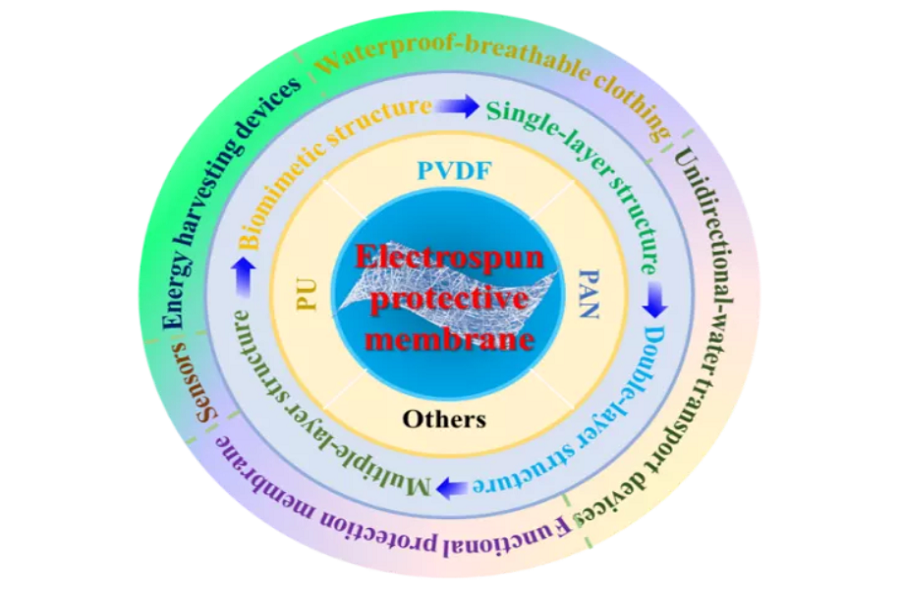
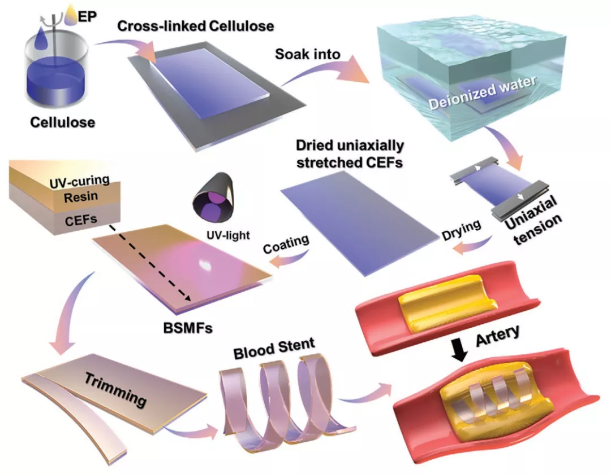

News
-

Recent Progress in Protective Membranes Fabricated Via Electrospinning: Advanced Materials, Biomimetic Structures, and Functional Applications
In the past twenty years, electrospinning technology has developed rapidly and has been applied to biomedical, flexible electronics, high efficiency catalysis, integrated manufacturing and other fields...
-
An Innovative Solvent-Responsive Coiling–Expanding Stent
Coronary artery disease is the “first killer” in the world, while the classical treatment for this disease is to implant stent. An ideal vascular stent should be nontoxic with self-expanding characteristics, quick expanding speed, and appropriate mechanical supporting property. However, no existing vascular stent covers all properties...

Related Links
- Personal Website in BME, CityU
- Google Scholar Profile
- Contact Knowledge Transfer Office for Technology Licensing
- Technologies for Licensing
- 第十五届光华工程科技奖: Prof. Jinlian Hu, CityUHK scientist honoured with the Guanghua Engineering Science and Technology Prize
- 第十五届光华工程科技奖: 香港創科揚威世界 四政府部門獲日內瓦國家發明展獎項, HKTKWW, 大公文匯, 15 July 2024
- 第十五届光华工程科技奖: 創科為港爭光 逾300人獲嘉許 (特首: 彰顯港雄厚力量, 為建國際創科中心奠定穩健基礎, 香港文匯報, 15 July 2024
- 第十五届光华工程科技奖:香港創科成就在世界舞台大展光芒（附圖／短片）, 香港特別行政區政府新聞公報,15 July 2024
- 第十五届光华工程科技奖揭晓仪式在京举行 41位专家获奖 , 中国新闻网
- CENG Research Excellence Awards 2024
- Prof. Jinlian got the Gold Award in the 49th International Exhibition of Inventions of Geneva (CityUHK triumphs at the International Exhibition of Inventions of Geneva with 36 awards)
- NAI - Fellow of the US National Academy of Inventors: CityU Today story on NAI Professor Hu Jinlian –the shape of materials to come, CityU Today story on NAI, June 2023
- NAI - Fellow of the US National Academy of Inventors: e-Bulletin: College of Engineering (January 2023)